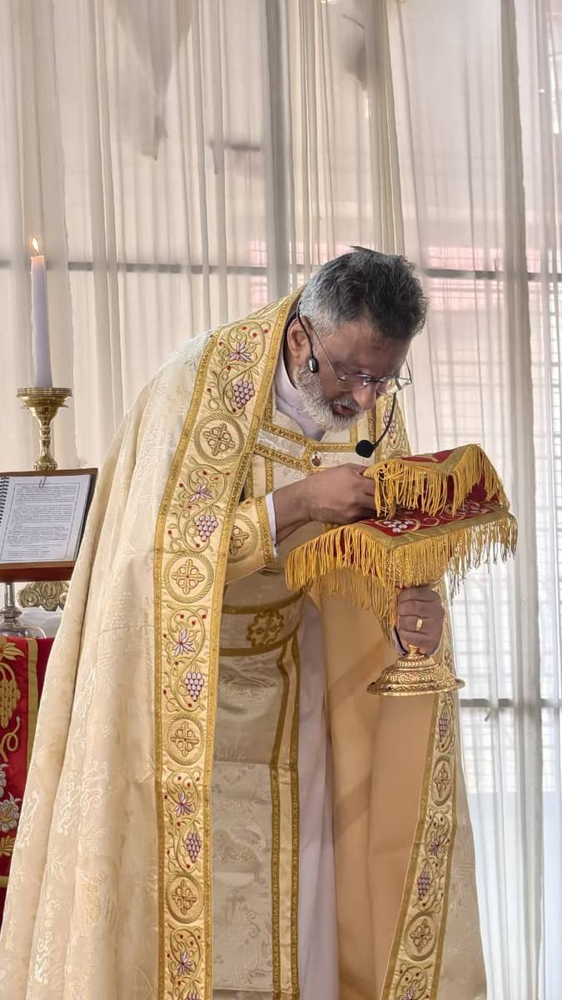
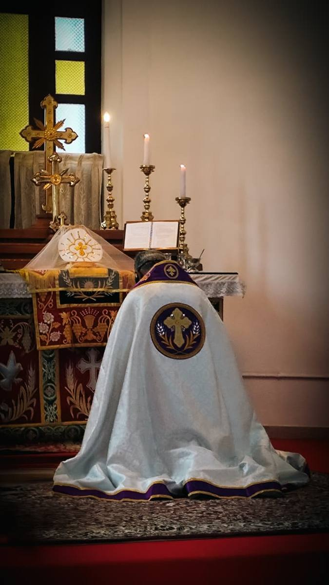

Niranam, Kerala · One of the Seven Churches
Niranam Jerusalem Mar Thoma Church stands as one of the seven and a half churches St. Thomas founded during his missionary travels through Kerala in A.D. 52. It remains the only church of this ancient tradition within the Mar Thoma denomination.
The four families — Pattamukku, Thayyil, Maankki, and Madathilan — were the first Christians of Niranam. Their faith endured through centuries, reformation, and renewal. We are their living continuation.

